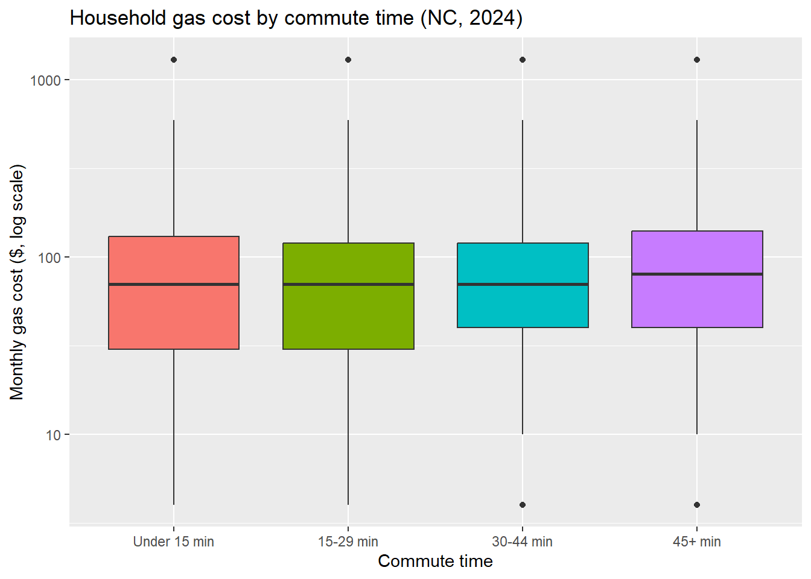
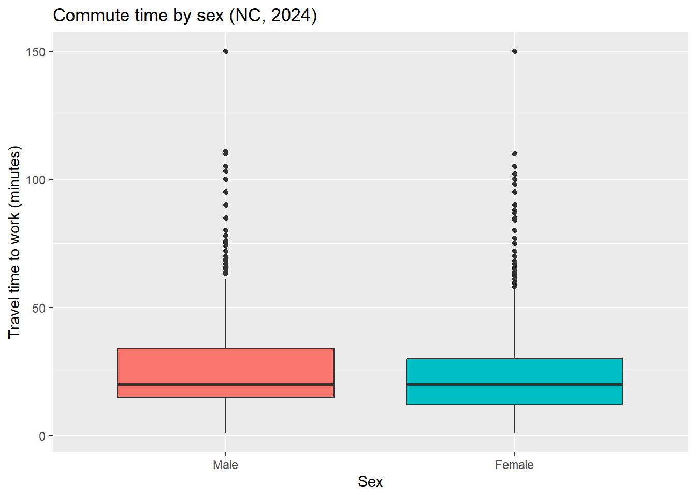
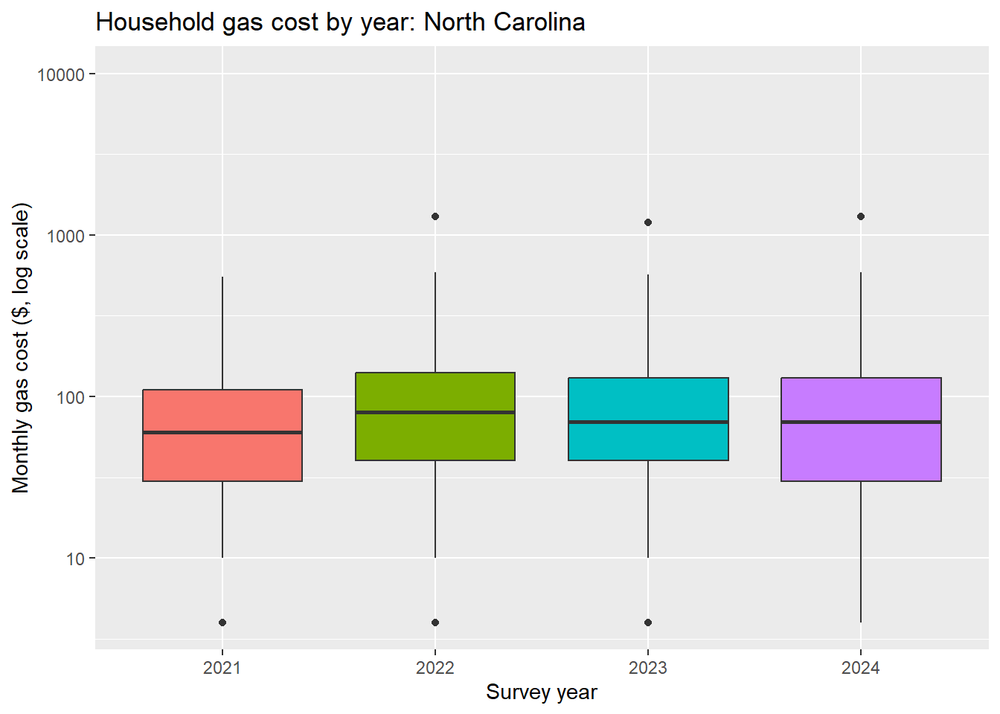
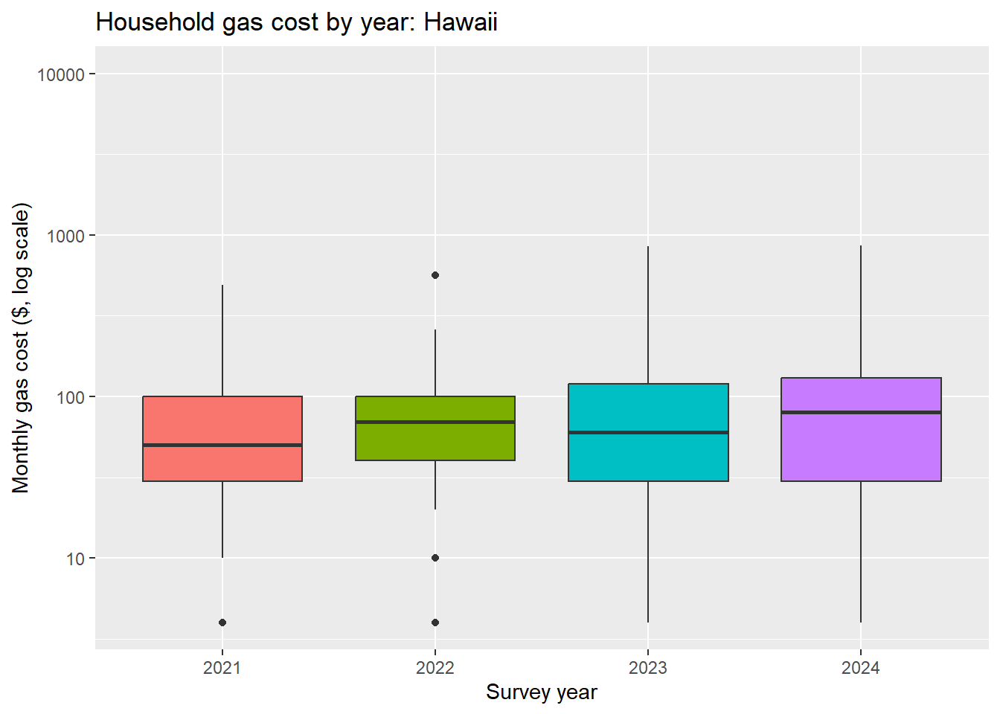
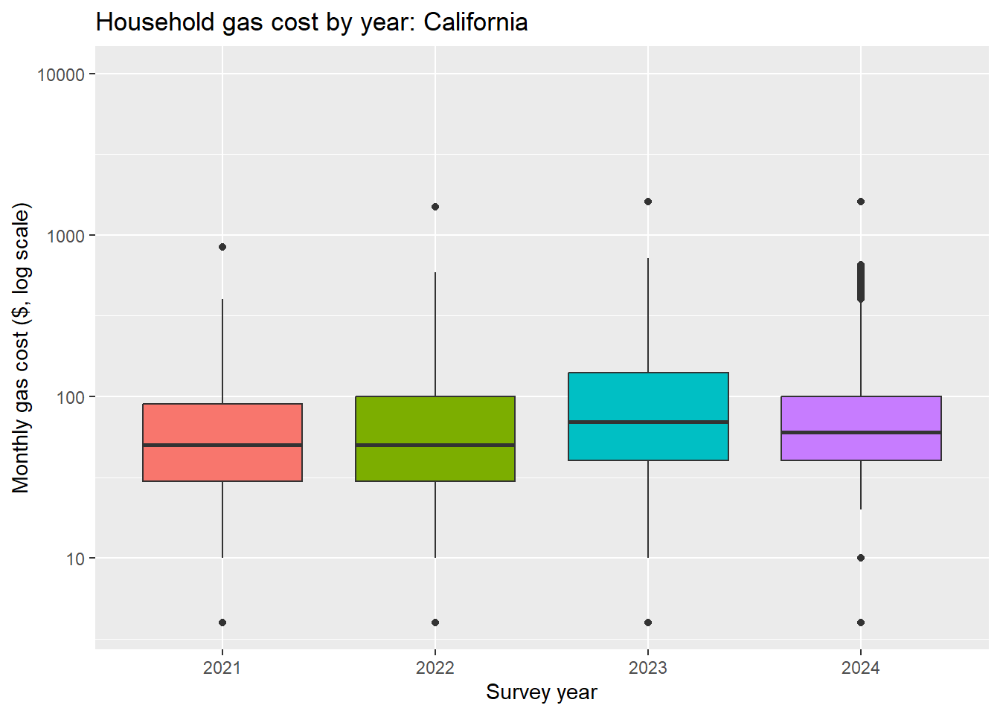
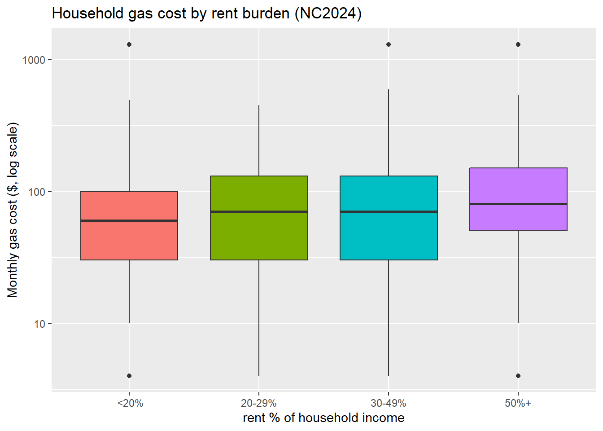
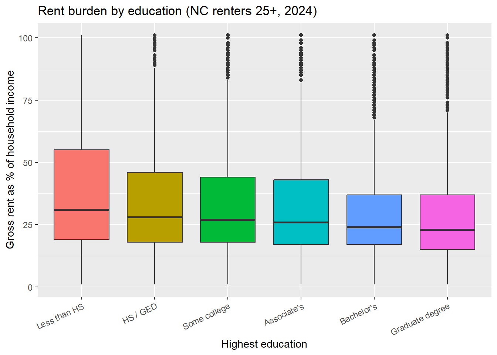

library(httr)
library(jsonlite)
library(tidyverse)
library(hms)Project 1
Install and load all necessary libraries, and suppress warnings
This project is for me to learn and explore how API querying works by focusing on the U.S. Census Bureau’s Public Use Microdata Sample (PUMS) API. Its vast amounts of information is what makes it ideal for this exploration task: navigating it is scary, long, and tedious. This is exactly the type of API that benefits from a mini specialized toolkit, allowing laymen (like me probably a month after this assignment is over) to access and learn from this dataset rather than ignore it because it feels daunting.
Here’s my workflow:
- Write Functions that
- Query the API
- Allows for user specifications
- Combines several years into one tibble
- Custom summary information (numeric and visual)
- Use these summary tools to demonstrate their functionality but also to show it works
This project focuses on data from 2021 - 2024. Here’s a list of the relevant variables used in my functions:
Numeric variables
- AGEP: age of the person in years - GASP: monthly gas cost for the household (some values are special codes such as gas being included in the rent) - GRPIP: gross rent as a percentage of household income - JWAP: time of arrival at work (reported in time ranges, which I convert to the midpoint of each range) - JWDP: time of departure for work (also converted to a midpoint) - JWMNP: travel time to work, in minutes - PWGTP: person weight, the number of people in the population that each row represents
Categorical variables
- FER: whether the person gave birth to a child within the past 12 months - HHL: household language - SCH: school enrollment status - SCHL: highest level of educational attainment - SEX: sex of the person
Geography variables
- STATE (ST in 2021,2022): state of residence - REGION: Census region (such as Northeast or South) - DIVISION: Census division, a smaller grouping of states within a region
Part 1: Data Processing
Parsing Variable Values
I wrote a function obtain_url_info() to first GET() the URL, parse the JSON, and then pull out a list of the variables with their values
obtain_url_info <- function(url) {
year <- str_extract(url, "20\\d{2}")
output <- GET(url) #GET() the URL
parsed <- fromJSON(rawToChar(output$content))$variables #parse the JSON
if (year %in% c("2021", "2022")) {
parsed$STATE <- parsed$ST
}
vars <- c( #pull out list of the variables
"AGEP", "GASP", "GRPIP", "JWAP", "JWDP", "JWMNP",
"PWGTP", "FER", "HHL", "SCH", "SCHL", "SEX",
"STATE", "REGION", "DIVISION"
)
parsed[vars]
}Here’s how I obtained and stored one list for each year
result_21 <- obtain_url_info("https://api.census.gov/data/2021/acs/acs1/pums/variables.json")
result_22 <- obtain_url_info("https://api.census.gov/data/2022/acs/acs1/pums/variables.json")
result_23 <- obtain_url_info("https://api.census.gov/data/2023/acs/acs1/pums/variables.json")
result_24 <- obtain_url_info("https://api.census.gov/data/2024/acs/acs1/pums/variables.json")I then saved the lists in an .rds file, and it is in my repo under the data folder
var_desc <- list(
yr_21 = result_21,
yr_22 = result_22,
yr_23 = result_23,
yr_24 = result_24
)
saveRDS(var_desc, "data/variable_description.rds")Parsing API Data
First I get my regular URL query to work as a check
api <- Sys.getenv("API_KEY")
response <- GET(
"https://api.census.gov/data/2024/acs/acs1/pums",
query = list(
get = "AGEP,GASP,GRPIP,JWAP,JWDP,JWMNP,PWGTP",
`for` = "state:37",
key = api
)
)
responseResponse [https://api.census.gov/data/2024/acs/acs1/pums?get=AGEP%2CGASP%2CGRPIP%2CJWAP%2CJWDP%2CJWMNP%2CPWGTP&for=state%3A37&key=1348faf156b7a097f231193d4f8b704b551a179b]
Date: 2026-10-06 06:04
Status: 200
Content-Type: application/json;charset=utf-8
Size: 4.6 MB
[["AGEP","GASP","GRPIP","JWAP","JWDP","JWMNP","PWGTP","state"],
["23","3","0","88","49","2","60","37"],
["21","3","0","0","0","0","49","37"],
["20","3","0","89","49","5","24","37"],
["79","3","0","0","0","0","54","37"],
["18","3","0","0","0","0","79","37"],
["19","3","0","0","0","0","54","37"],
["22","3","0","0","0","0","58","37"],
["18","3","0","72","31","13","17","37"],
["22","3","0","82","43","3","30","37"],
...str(response)List of 10
$ url : chr "https://api.census.gov/data/2024/acs/acs1/pums?get=AGEP%2CGASP%2CGRPIP%2CJWAP%2CJWDP%2CJWMNP%2CPWGTP&for=state%"| __truncated__
$ status_code: int 200
$ headers :List of 11
..$ cache-control : chr "max-age=60, must-revalidate"
..$ access-control-allow-origin : chr "*"
..$ access-control-allow-methods: chr "GET"
..$ access-control-allow-headers: chr "Origin, X-Requested-With, Content-Type, Accept"
..$ referrer-policy : chr "same-origin"
..$ content-security-policy : chr "default-src 'self'; img-src 'self' data:; object-src 'none'; script-src 'self' 'unsafe-inline'; style-src 'self"| __truncated__
..$ x-content-type-options : chr "nosniff"
..$ content-type : chr "application/json;charset=utf-8"
..$ date : chr "Tue, 06 Oct 2026 06:04:37 GMT"
..$ strict-transport-security : chr "max-age=31536000"
..$ transfer-encoding : chr "chunked"
..- attr(*, "class")= chr [1:2] "insensitive" "list"
$ all_headers:List of 1
..$ :List of 3
.. ..$ status : int 200
.. ..$ version: chr "HTTP/1.1"
.. ..$ headers:List of 11
.. .. ..$ cache-control : chr "max-age=60, must-revalidate"
.. .. ..$ access-control-allow-origin : chr "*"
.. .. ..$ access-control-allow-methods: chr "GET"
.. .. ..$ access-control-allow-headers: chr "Origin, X-Requested-With, Content-Type, Accept"
.. .. ..$ referrer-policy : chr "same-origin"
.. .. ..$ content-security-policy : chr "default-src 'self'; img-src 'self' data:; object-src 'none'; script-src 'self' 'unsafe-inline'; style-src 'self"| __truncated__
.. .. ..$ x-content-type-options : chr "nosniff"
.. .. ..$ content-type : chr "application/json;charset=utf-8"
.. .. ..$ date : chr "Tue, 06 Oct 2026 06:04:37 GMT"
.. .. ..$ strict-transport-security : chr "max-age=31536000"
.. .. ..$ transfer-encoding : chr "chunked"
.. .. ..- attr(*, "class")= chr [1:2] "insensitive" "list"
$ cookies :'data.frame': 1 obs. of 7 variables:
..$ domain : chr "#HttpOnly_.api.census.gov"
..$ flag : logi TRUE
..$ path : chr "/"
..$ secure : logi TRUE
..$ expiration: POSIXct[1:1], format: "Inf"
..$ name : chr "TS010383f0"
..$ value : chr "01283c52a40eabbf1e43b430877f00ceac9c21273d7c2c143c8f80dde047456d1bfd9bc8575ca2a5aa8ec0d699b0821a14e96c63c0"
$ content : raw [1:4599120] 5b 5b 22 41 ...
$ date : POSIXct[1:1], format: "2026-10-06 06:04:37"
$ times : Named num [1:6] 0 0.000089 0 0.000304 0.790965 ...
..- attr(*, "names")= chr [1:6] "redirect" "namelookup" "connect" "pretransfer" ...
$ request :List of 7
..$ method : chr "GET"
..$ url : chr "https://api.census.gov/data/2024/acs/acs1/pums?get=AGEP%2CGASP%2CGRPIP%2CJWAP%2CJWDP%2CJWMNP%2CPWGTP&for=state%"| __truncated__
..$ headers : Named chr "application/json, text/xml, application/xml, */*"
.. ..- attr(*, "names")= chr "Accept"
..$ fields : NULL
..$ options :List of 2
.. ..$ useragent: chr "libcurl/8.3.0 r-curl/5.2.0 httr/1.4.7"
.. ..$ httpget : logi TRUE
..$ auth_token: NULL
..$ output : list()
.. ..- attr(*, "class")= chr [1:2] "write_memory" "write_function"
..- attr(*, "class")= chr "request"
$ handle :Class 'curl_handle' <externalptr>
- attr(*, "class")= chr "response"The next overarching goal is to create a function named query_API() that makes it relatively easier to query and read through the census information so we can use in a meaningful manner (as opposed to staring at the long nested api result and relying on pretty print). To do this, I first wrote a skeleton for query_API() using comments, and based on that I determined what helper functions I would need:
convert raw url response to tibble
fixing data types of the columns as appropriate (be it numeric or factors for categorical)
- I created a separate helper for handling time data by taking advantage of the
hmspackage, and incorporated this within the data types helper
- I created a separate helper for handling time data by taking advantage of the
validating and formatting the specific values for a geographic level, since it needs to be mapped appropriately to a level based on the year as well
This helper is for converting URL queries into a readable format, and I tested to see if it functions as intended using the response from the regular query above.
helper_response_to_tibble <- function(url_response){
parsed_data <- fromJSON(rawToChar(url_response$content))
column_names <- parsed_data[1, ] #first row has col names
parsed_data <- parsed_data[-1, , drop = FALSE]
colnames(parsed_data) <- column_names
tibble_data <- as_tibble(parsed_data)
tibble_data
}
helper_response_to_tibble(response)# A tibble: 114,270 × 8
AGEP GASP GRPIP JWAP JWDP JWMNP PWGTP state
<chr> <chr> <chr> <chr> <chr> <chr> <chr> <chr>
1 23 3 0 88 49 2 60 37
2 21 3 0 0 0 0 49 37
3 20 3 0 89 49 5 24 37
4 79 3 0 0 0 0 54 37
5 18 3 0 0 0 0 79 37
6 19 3 0 0 0 0 54 37
7 22 3 0 0 0 0 58 37
8 18 3 0 72 31 13 17 37
9 22 3 0 82 43 3 30 37
10 67 3 0 0 0 0 37 37
# ℹ 114,260 more rowsThe first helper function helper_parse_time() is to appropriately convert the given information into timestamps, and the next one helper_data_types() is to fix the data types: either to numeric, or make them a factor with appropriate labels.
helper_parse_time <- function(codes, time_map) {
# Find the midpoint of one interval label
midpoint <- function(label) {
endpoints <- strsplit(label, " to ", fixed = TRUE)[[1]]
if (length(endpoints) != 2L) {
return(NA_real_)
}
endpoints <- toupper(gsub("\\.", "", endpoints)) # Change "7:15 a.m." into "7:15 AM"
times <- strptime(
endpoints,
format = "%I:%M %p",
tz = "UTC"
)
seconds <- times$hour * 3600 + times$min * 60
if (anyNA(seconds)) {
return(NA_real_)
}
# Handle an interval crossing midnight
if (seconds[2] < seconds[1]) {
seconds[2] <- seconds[2] + 86400
}
return(mean(seconds) %% 86400)
}
# Calculate the midpoint for each possible code
midpoint_values <- vapply(
unname(time_map),
midpoint,
numeric(1)
)
# Match the observations to their codes
# Numeric matching makes "046" and "46" equivalent
positions <- match(
as.numeric(codes),
as.numeric(names(time_map))
)
return(hms::as_hms(unname(midpoint_values[positions])))
}helper_data_types <- function(df, year) {
num_var <- c("AGEP", "GASP", "GRPIP", "JWMNP", "PWGTP")
cat_var <- c("FER", "HHL", "SCH", "SCHL", "SEX")
variables <- colnames(df)
for (x in variables) {
if (x %in% num_var) {
df[[x]] <- as.numeric(df[[x]])
} else if (x %in% cat_var) {
value_map <- unlist(year[[x]]$values$item)
value_map <- value_map[
order(as.numeric(names(value_map)))
]
df[[x]] <- factor(
as.numeric(df[[x]]),
levels = as.numeric(names(value_map)),
labels = unname(value_map)
)
} else if (x %in% c("JWAP", "JWDP")) {
time_map <- unlist(year[[x]]$values$item)
df[[x]] <- helper_parse_time(df[[x]], time_map)
}
}
return(df)
}This helper checks that the chosen geography codes are valid, handles the “all” option while excluding Puerto Rico, and formats the codes for the API query.
helper_geo_value_validate <- function(geo_specific, geo_map) {
geo_map <- geo_map[!grepl("Puerto Rico", geo_map, fixed = TRUE)]
if (!(is.character(geo_specific) || is.numeric(geo_specific)) ||
length(geo_specific) == 0L ||
anyNA(geo_specific)) {
stop("Provide valid geography codes or 'all'.")
}
geo_specific <- as.character(geo_specific)
if (length(geo_specific) == 1L &&
tolower(geo_specific) == "all") {
geo_specific <- names(geo_map)
} else if (!all(geo_specific %in% names(geo_map))) {
stop("Invalid code for the selected geography level.")
}
return(paste(unique(geo_specific), collapse = ","))
}Lets incorporate our helpers into a function that accomplishes multiple goals. The user may choose a survey year, numeric and categorical variables, and a geographic subset (if they don’t, default values are provided, and PWGTP is mandatory included). The function checks these inputs, sends the request, and uses the helpers to return a tibble with numeric values, labeled factors, and time values. Finally, it adds the “census” class so we can use our custom summary and plotting methods later.
query_API <- function(year = 2024,
num_vars = c("AGEP","PWGTP"), cat_vars="SEX",
geo_level="State", geo_specific=NULL){
#--------------------------- if else conditions check ---------------------------
if(anyNA(c(year, num_vars, cat_vars, geo_level))){
stop("NA error in arguments")
}
#Year
if (is.null(year) || !(year %in% 2021:2024) || length(year) != 1L){
stop("invalid year argument")
}
#Numeric var
num_var_options <- c("AGEP", "GASP", "GRPIP", "JWAP", "JWDP" , "JWMNP", "PWGTP")
if(!"PWGTP" %in% num_vars){ # PWGTP always returned
if(length(num_vars) < 1){
stop("need to provide a numeric argument")
}
num_vars <- c(num_vars, "PWGTP")
} else if(length(num_vars) == 1){
stop("need to provide at least one numeric argument apart from PWGTP")
}
if(!all(num_vars %in% num_var_options)){
stop("invalid numeric argument")
}
#Categorical variables
cat_var_options <- c("FER", "HHL", "SCH", "SCHL", "SEX")
if(is.null(cat_vars) || length(cat_vars)==0 ){
stop("need to provide a categorical argument")
}
if(!all(cat_vars %in% cat_var_options)){
stop("invalid categorical argument")
}
#Geography level
if(is.null(geo_level) || length(geo_level)!=1 || geo_level == "All"
|| !(tolower(geo_level) %in% c("region", "division", "state"))){
stop("invalid geo level, choose only one option from State, Region, Division")
}
geo_level <- tolower(geo_level)
#Geography Specific
descriptions <- readRDS("data/variable_description.rds")
year_name <- paste0(
"yr_",
substr(as.character(year), 3, 4) # select relevant yr
)
year_info <- descriptions[[year_name]]
geo_map <- unlist(
year_info[[toupper(geo_level)]]$values$item
)
if(is.null(geo_specific)){
if(geo_level == "state"){
geo_specific <- 37
}else if(geo_level == "region"){
geo_specific <- 3
}else if(geo_level == "division"){
geo_specific <- 3
}
}
geo_specific <- helper_geo_value_validate(geo_specific, geo_map)
#---------------------------------- Query URL -----------------------------------
response <- GET(
paste0("https://api.census.gov/data/",
year,
"/acs/acs1/pums?get=",
paste(c(num_vars, cat_vars), collapse = ","),
"&for=", geo_level, ":",geo_specific,
"&key=", api
)
)
if(response$status_code != 200){
stop("query status error")
}
#----------------------------- Parse data as tibble -----------------------------
result <- response |>
helper_response_to_tibble()|>
helper_data_types(year_info)
class(result) <- c("census", class(result))
return(result)
}Combining Years
I first check to see if the year values are valid (if not why bother wasting computing power). Then I use my query_API() function to query for all the given years (same conventions as the single year query apply, and the ... in the argument takes care of that for user input), add it to an empty tibble one by one, then bind the rows after each addition. I also factorize year here so that it’s helpful for the next numeric summarizing part.
query_API_multi <- function(input_years, ...){
years <- unique(input_years)
if (length(years) < 1L || !all(years %in% 2021:2024)) {
stop("years must be a subset of 2021, 2022, 2023, 2024")
}
combined <- tibble()
for (x in years) {
df <- query_API(year = x, ...) # one year at a time
class(df) <- setdiff(class(df), "census")
df$year <- x # add the year column
combined <- bind_rows(combined, df)
}
combined$year <- factor(combined$year, levels = sort(years)) # factorize year
class(combined) <- c("census", class(combined))
combined
}Part 2
Numeric Summaries
Each row in the PUMS data represents a number of people given by PWGTP, so treating every row equally would be misleading. These helpers use that weight to calculate mean and standard deviation, leaving out observations with missing numeric values.
# weighted mean
weighted_mean <- function(x, w) {
keep <- !is.na(x)
sum(x[keep] * w[keep]) / sum(w[keep])
}
# weighted standard deviation
weighted_sd <- function(x, w) {
keep <- !is.na(x)
m <- weighted_mean(x, w)
sqrt(sum(x[keep]^2 * w[keep]) / sum(w[keep]) - m^2)
}Now I use these helpers to create a summary method for our census data. By default, it summarizes all numeric columns except PWGTP and counts the observations in each factor level. The user can also choose specific columns to summarize. The results are returned as a named list, making it similar to the baseR summary.
library(tidyverse)
summary.census <- function(object, num_vars = NULL, cat_vars = NULL) {
# Drop the census class so the dplyr verbs treat this as a plain tibble
class(object) <- setdiff(class(object), "census")
# Defaults: every numeric column except PWGTP, every factor column
if (is.null(num_vars)) {
num_vars <- object |>
select(where(is.numeric), -PWGTP) |>
names()
}
if (is.null(cat_vars)) {
cat_vars <- object |>
select(where(is.factor)) |>
names()
}
#------------------------------- User Specified -------------------------------
# col exists
if (!all(c(num_vars, cat_vars) %in% names(object))) {
stop("num_vars and cat_vars must be columns of the census tibble")
}
# Numeric: weighted mean and sd
num_summary <- object |>
summarize(across(all_of(num_vars),
list("mean" = ~ weighted_mean(.x, PWGTP),
"sd" = ~ weighted_sd(.x, PWGTP)),
.names = "{.fn}_{.col}"))
# Categorical: counts via group_by() and n()
cat_summary <- list()
for (v in cat_vars) {
cat_summary[[v]] <- object |>
group_by(.data[[v]]) |>
summarize(count = n())
}
# numeric: flat named list ($mean_AGEP, $sd_AGEP, ...)
num_list <- as.list(num_summary)
# categorical: named count vectors instead of tibbles
cat_list <- lapply(cat_summary, function(df) setNames(df$count, as.character(df[[1]])))
list(numeric = num_list, categorical = cat_list)
}Lets test and see if this code works by using default summary for multiple years, then by specifying what exact summary stats we want (one each type, AGEP and year)
dat <- query_API_multi(2023:2024, num_vars=c("AGEP", "GASP", "GRPIP"), cat_vars="SEX")
print("Default Values (all)")[1] "Default Values (all)"summary(dat)$numeric
$numeric$mean_AGEP
[1] 39.76845
$numeric$sd_AGEP
[1] 23.25635
$numeric$mean_GASP
[1] 48.14171
$numeric$sd_GASP
[1] 119.4363
$numeric$mean_GRPIP
[1] 9.953021
$numeric$sd_GRPIP
[1] 21.31345
$categorical
$categorical$SEX
Male Female
109794 116396
$categorical$year
2023 2024
111920 114270 print("\n One categorical (year), one numerical (AGEP)")[1] "\n One categorical (year), one numerical (AGEP)"summary(dat, num_vars = "AGEP", cat_vars = "year")$numeric
$numeric$mean_AGEP
[1] 39.76845
$numeric$sd_AGEP
[1] 23.25635
$categorical
$categorical$year
2023 2024
111920 114270 From my testing of various combinations, all the numerical and categorical variables (apart from the time ones) seem to return values as expected (i.e. mean and sd for numeric, and count by levels for categorical).
Graphical Summaries
library(tidyverse)
plot.census <- function(x, cat_var, num_var) {
class(x) <- setdiff(class(x), "census") #same reason as numeric summary
# Check inputs
if (length(cat_var) != 1L || length(num_var) != 1L) {
stop("Specify exactly one categorical variable and one numeric variable")
}
if (!all(c(cat_var, num_var) %in% names(x))) {
stop("cat_var and num_var must be columns of the census tibble")
}
if (!is.numeric(x[[num_var]]) || num_var == "PWGTP") {
stop("num_var must be a numeric variable other than PWGTP (time variables are not supported)")
}
if (!(is.factor(x[[cat_var]]) || is.character(x[[cat_var]]))) {
stop("cat_var must be a categorical (factor or character) variable")
}
# drop rows missing variable, weight each row by PWGTP
g <- ggplot(x |> drop_na(all_of(c(cat_var, num_var))),
aes(x = get(cat_var), y = get(num_var),
weight = PWGTP, fill = get(cat_var)))
# Boxplot layer plus labels (the legend would just repeat the x-axis)
g +
geom_boxplot() +
labs(x = cat_var, y = num_var) +
theme(legend.position = "none")
}Use and Investigate: household gas costs, commuting, and rent burden
Now that the toolkit is working, I want to test it on a few questions about everyday costs. For each question I show the numerical summary (weighted means and standard deviations from summary()) as well as a visual (boxplots from plot()).
Four questions:
- Do household gas costs differ by commute time (and does commute time differ by sex)?
- How have gas costs changed from 2021 to 2024 in North Carolina, Hawaii, and California?
- Do people who spend a larger share of income on rent spend more or less on gas?
- How does rent burden differ by highest level of education?
These are some issues I noticed. Some numeric values are codes rather than measurements: GASP below 4 means gas is not separately billed (for example, included in rent), and GRPIP or JWMNP equal to 0 means not applicable. I drop those rows with filter() before summarizing. GRPIP is rent as a percent of household income, and a value of 101 means “101% or more”. Gas costs are in nominal dollars, so they are not adjusted for inflation.
Gas costs, commute time, and rent: North Carolina, 2024
Questions 1, 3, and 4 all use the same sample, so I query it once. This call tests year and the geography defaults (2024, North Carolina).
nc <- query_API(
num_vars = c("AGEP", "GASP", "GRPIP", "JWMNP"),
cat_vars = c("SEX", "SCHL")
)
class(nc)[1] "census" "tbl_df" "tbl" "data.frame"Q1. Gas costs vs commute time
commute_gas <- nc |>
filter(GASP >= 4, JWMNP > 0) |>
mutate(commute = cut(JWMNP,
breaks = c(0, 15, 30, 45, Inf), right = FALSE,
labels = c("Under 15 min", "15-29 min", "30-44 min", "45+ min")))
# call summary() once per commute group
# Weighted means and SDs by commute group (NC, 2024)
round(
sapply(split(commute_gas, commute_gas$commute),
\(d) unlist(summary(d, num_vars = c("GASP", "JWMNP"), cat_vars = character(0))$numeric)),
1) Under 15 min 15-29 min 30-44 min 45+ min
mean_GASP 122.3 106.4 113.9 122.5
sd_GASP 200.5 151.8 172.1 191.7
mean_JWMNP 8.1 19.1 33.1 63.2
sd_JWMNP 3.1 3.8 4.1 29.4plot(commute_gas, cat_var = "commute", num_var = "GASP") +
scale_y_log10() +
labs(title = "Household gas cost by commute time (NC, 2024)",
x = "Commute time", y = "Monthly gas cost ($, log scale)")Warning in .recacheSubclasses(def@className, def, env): undefined subclass
"ndiMatrix" of class "replValueSp"; definition not updated
Household gas costs look nearly the same across commute groups, except 45+ looks slightly higher. The medians sit around $70-80 and the boxes overlap heavily, but the 45+ minute group (weighted mean about $122 vs. about $106-114 for the middle groups). The standard deviations ($150-200) are larger than the differences between group means, so any commute effect is small compared to the household-to-household variation. Seems like longer commutes doesn’t automatically mean higher monthly gas costs for the most part, unless you’re a large outlier commute time.
commuters <- nc |> filter(JWMNP > 0)
# Weighted commute time (minutes) by sex (NC, 2024)
round(
sapply(split(commuters, commuters$SEX),
\(d) unlist(summary(d, num_vars = "JWMNP", cat_vars = character(0))$numeric)),
1) Male Female
mean_JWMNP 27.1 24.3
sd_JWMNP 22.8 19.4plot(commuters, cat_var = "SEX", num_var = "JWMNP") +
labs(title = "Commute time by sex (NC, 2024)",
x = "Sex", y = "Travel time to work (minutes)")
Men in North Carolina have a slightly longer average commute than women (about 27.1 vs. 24.3 minutes, roughly a 3-minute gap). The spreads are wide (SD about 23 and 19 minutes), so the two groups overlap a lot and the difference might be negligible.
Q2. Gas costs over years (North Carolina, Hawaii, and California)
This question uses my multi-year function, and each state is its own call with a different geo_specific. I only add GASP (the function defaults PWGTP and SEX ).
gas_by_state <- list(
NC = query_API_multi(2021:2024, num_vars = "GASP", geo_specific = "37"),
Hawaii = query_API_multi(2021:2024, num_vars = "GASP", geo_specific = "15"),
CA = query_API_multi(2021:2024, num_vars = "GASP", geo_specific = "06")
) |>
lapply(\(d) filter(d, GASP >= 4))Numeric Summary: the weighted mean monthly gas cost for each state and year, from summary().
round(
sapply(gas_by_state, \(d)
sapply(split(d, d$year), \(y)
summary(y, num_vars = "GASP", cat_vars = character(0))$numeric$mean_GASP)),
2) NC Hawaii CA
2021 90.57 86.28 74.18
2022 120.35 106.41 94.30
2023 116.96 120.63 118.15
2024 114.22 115.91 101.56Boxplots for each state. All three use the same y-axis range.
plot(gas_by_state$NC, cat_var = "year", num_var = "GASP") +
scale_y_log10(limits = c(4, 10000)) +
labs(title = "Household gas cost by year: North Carolina",
x = "Survey year", y = "Monthly gas cost ($, log scale)")
plot(gas_by_state$Hawaii, cat_var = "year", num_var = "GASP") +
scale_y_log10(limits = c(4, 10000)) +
labs(title = "Household gas cost by year: Hawaii",
x = "Survey year", y = "Monthly gas cost ($, log scale)")Warning in rq.fit.br(wx, wy, tau = tau, ...): Solution may be nonunique
plot(gas_by_state$CA, cat_var = "year", num_var = "GASP") +
scale_y_log10(limits = c(4, 10000)) +
labs(title = "Household gas cost by year: California",
x = "Survey year", y = "Monthly gas cost ($, log scale)")
Household gas costs changed unevenly across the three states from 2021 to 2024. In North Carolina, the median increased in 2022, then slightly lower in 2023 and 2024. Hawaii also had similar median ranking as NC. California’s median peaked in 2023 before falling somewhat in 2024.
The distributions overlap a lot across years, so the changes do not really suggest that a particular year had higher costs than others.
Q3. Gas costs and rent burden
The API gives rent as a share of household income (GRPIP) rather than rent in dollars, so the question is specifically do people who pay a bigger share of their income toward rent show higher or lower gas bills? I group GRPIP so my plot method can be reused.
rent_gas <- nc |>
filter(GASP >= 4, GRPIP > 0) |>
mutate(rent_burden = cut(GRPIP,
breaks = c(0, 20, 30, 50, Inf), right = FALSE,
labels = c(" <20%", "20-29%", "30-49%", "50%+")))
# Weighted means and SDs by rent-burden group (NC renters, 2024)
round(
sapply(split(rent_gas, rent_gas$rent_burden),
\(d) unlist(summary(d, num_vars = c("GASP", "GRPIP"), cat_vars = character(0))$numeric)),
1) <20% 20-29% 30-49% 50%+
mean_GASP 81.4 89.6 107.1 150.3
sd_GASP 87.8 75.7 132.3 248.3
mean_GRPIP 13.7 23.8 37.6 78.2
sd_GRPIP 4.1 2.8 5.9 20.2plot(rent_gas, cat_var = "rent_burden", num_var = "GASP") +
scale_y_log10() +
labs(title = "Household gas cost by rent burden (NC2024)",
x = "rent % of household income", y = "Monthly gas cost ($, log scale)")
Household gas costs generally increased with rent burden. The average monthly gas bill rose from $81.40 in the lowest rent-burden group to $150.30 in the highest. The highest group also had the most variation in gas bills.
However, the distributions overlap a lot, so people with higher rent burdens do not always have higher gas costs.
Q4. Education and rent burden, by sex
This is a comparison of rent burden across highest level of education for adults 25 and older (so most people have finished school). The SCHL factor has many detailed levels, so I look up each person’s official code from my saved variable descriptions and collapse the codes into six groups.
schl_map <- unlist(readRDS("data/variable_description.rds")$yr_24$SCHL$values$item)
edu_rent <- nc |>
filter(AGEP >= 25, GRPIP > 0) |>
mutate(
code = as.integer(names(schl_map)[match(as.character(SCHL), schl_map)]), # label back to code
education = cut(code, breaks = c(0, 15, 17, 19, 20, 21, 24),
labels = c("Less than HS", "HS / GED", "Some college",
"Associate's", "Bachelor's", "Graduate degree"))
)
# Weighted rent burden (% of income) by education (NC renters 25+, 2024)
round(
sapply(split(edu_rent, edu_rent$education),
\(d) unlist(summary(d, num_vars = "GRPIP", cat_vars = character(0))$numeric)),
1) Less than HS HS / GED Some college Associate's Bachelor's
mean_GRPIP 40.8 35.7 35.3 34.3 31.4
sd_GRPIP 28.6 25.5 25.3 25.0 22.6
Graduate degree
mean_GRPIP 30.8
sd_GRPIP 23.3plot(edu_rent, cat_var = "education", num_var = "GRPIP") +
labs(title = "Rent burden by education (NC renters 25+, 2024)",
x = "Highest education", y = "Gross rent as % of household income") +
theme(axis.text.x = element_text(angle = 25, hjust = 1))
For North Carolina renters aged 25 and older, higher educational attainment is associated with lower rent burden. The weighted mean declined from 40.8% of household income for those with less than a high school education to 30.8% for those with a graduate degree (10% difference). The boxplots shows the same pattern in the medians, with a wider spread among those with less than a high school education.
However, the distributions overlap considerably, and high rent burdens appear in every education group. This suggests that education alone does not explain the variation. Also, a lower rent burden does not necessarily mean lower rent payments: it could reflect higher household income, lower rent, or both.
Conclusion
The most interesting part of this project was creating the summary and plotting functions, since they turned the data I queried into something easier to understand and explore. This was also my first time implementing a custom class and seeing how R uses it to choose the appropriate method. Adding the "census" class and then calling summary() and plot() made that concept feel much more concrete. Overall, I now have a better understanding of API querying and a toolkit I can reuse.